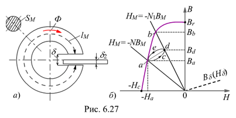

6.3.4.1. Магнит с воздушным зазором
Рассчитаем магнитную индукцию Вd в зазоре тороидального магнита (рис. 6.27, а), полагая известными длину lМ средней линии магнитной индукции и площадь поперечного сечения SМ ферромагнетика, длину d и площадь сечения Sd воздушного зазора, и размагничивающую часть гистерезисной петли BМ(НМ) материала магнита с остаточной индукцией Вr и коэрцитивной силой - Нс (рис. 6.27, б).
В воздушном зазоре магнитное поле возбуждается постоянным магнитом, которое в первом приближении можно считать однородным, и магнитный поток
Ф = BМSМ = BdSd. Откуда
Bd = BМSМ / Sd ; Нd = Bd /µ0 = 8Ч105BMSM / Sd.
Зависимость Bd(Нd) между магнитной индукцией и напряженности магнитного поля в воздушном зазоре изображена на рис. 6.27, б пунктирной линией. При расчёте постоянных магнитов построения ведут не в координатах Ф и UМ, а в координатах НМ и ВМ, т. е. строят кривую размагничивания и прямую НМ = - (1 / RМd)BМ, получаемую из закона полного тока для магнитной цепи:
(6.16) |
|---|
Нуль в правой части уравнения (6.16) объясняется тем, что на постоянном магните нет обмотки с током, поэтому НМlM = - Hdd.
Откуда, после подставки Нd , получаем
НМ = - Hd d / lM = - 8Ч105dSMBM / (lMSd) = - NBМ, |
(6.17) |
|---|
где N = 8Ч105dSM / (lMSd) - коэффициент размагничивания постоянного магнита при введении воздушного зазора d в его магнитную цепь.
Для определения магнитной индукции на рис. 6.27, б следует нанести прямую HM = - NBM. В точке а пересечения прямой с кривой размагничивания удовлетворяются обе зависимости HM = - NBM и BМ(НМ); точка пересечения горизонтали, проведённой через точку а, с осью ординат определяет индукцию Bа в ферромагнетике, а магнитная индукция в воздушном зазоре Bd = BаSМ / Sd.
Положение рабочей точки, кроме значений BМ и НМ, определяет также запас магнитной энергии в воздушном зазоре, т. к. удельная магнитная энергия (энергия в единице объёма) WМ = BМНМ / 2, Дж/м2. Произведение BМНМ называют энергетическим произведением.
Системы с постоянными магнитами проектируют так, чтобы энергетическое произведение было максимальным.